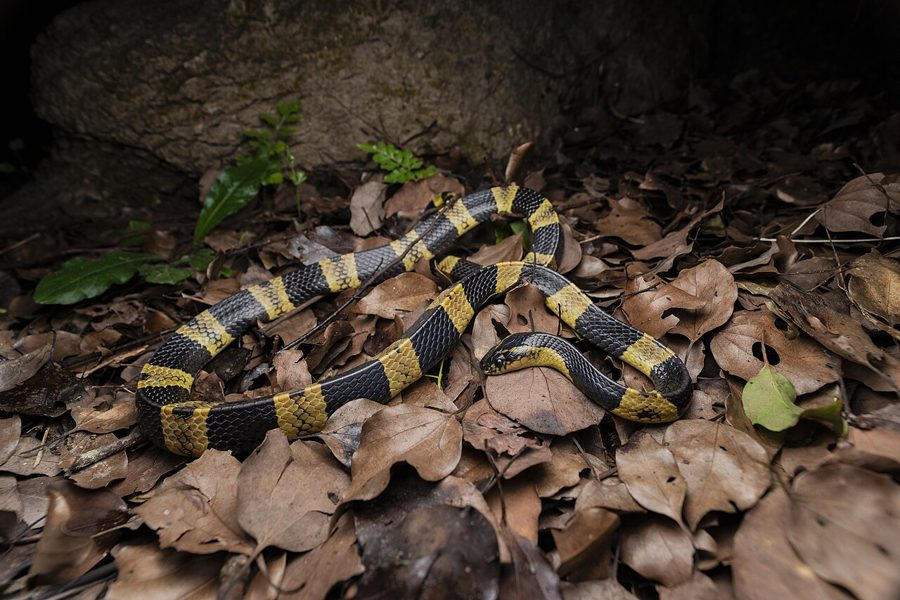

अहिराजBanded Krait
Bungarus fasciatus · Elapidae · REP-0024

- Scientific nameवैज्ञानिक नाम
- Bungarus fasciatus (Schneider, 1801)
- Familyकुल
- Elapidae
- Hindiहिंदी
- अहिराज
- Local namesस्थानीय नाम
- ahiraj, ahiraaj, peela kala saamp, banded krait
- Status hereयहाँ की स्थिति
- native
- Movementआवागमन
- Resident, here all year
- IUCNIUCN
- not evaluated
- Reviewसमीक्षा
- audited and independently read
When to look कब देखें
Expected mainly in March, April, May, June, July, August, September, October.मुख्यतः मार्च, अप्रैल, मई, जून, जुलाई, अगस्त, सितंबर, अक्टूबर में अपेक्षित।
Uses and possibilities उपयोग और संभावनाएँ
Drawn from the documented uses in the profile below, where each is labelled traditional, current or a research lead. All uses →
Tell it apart from इनसे अलग पहचानें
अहिराज / Banded Krait
Bungarus fasciatus (Schneider, 1801) — Elapidae
अहिराज — पूर्वी भारत और बांग्लादेश का एक विषैला साँप, जो पीली और काली गहरी बैंडों (धारियों) से सजा हुआ होता है। यह आम करैत से बड़ा और ज़्यादा रंगीन होता है। अहिराज शांत, दिन में छिपा हुआ, और रात में शिकार के लिए निकलता है। इसका जहर तंत्रिकाओं को पंगु कर देता है (न्यूरोटॉक्सिक)। गाँवों के खेतों और छप्परों में पाया जाता है, जहाँ यह छोटे सर्पों, मेंढकों और चूहों की शिकार करता है। भारतीय वन्यजीव संरक्षण अधिनियम 1972 की अनुसूची II में सुरक्षित। मध्य और पूर्वी भारत के समशीतोष्ण क्षेत्रों में रहता है, और अयोध्या-बस्ती क्षेत्र में संभव है।
Quick Identification त्वरित पहचान
| Feature | Description |
|---|---|
| Form | Moderately stout, cylindrical body; more robust than common krait |
| Markings | Alternating bright yellow and blue-black bands running across the entire body |
| Band pattern | 15–25 complete encircling bands; bands are wider and more distinct than common krait |
| Head | Blue-black with yellow markings; eyes are small with round pupils |
| Scales | Keeled, giving a somewhat rough texture; hexagonal vertebral scales enlarged |
| Behaviour | Strictly nocturnal; diurnal; coils when threatened with head hidden |
Field tip: Bright yellow-and-blue-black banded snake in rural areas, especially near water and paddy fields. Larger and more colorful than the common krait. If found at night, maintain a safe distance; do not touch.
हिंदी — कैसे पहचानें: पीली और काली गहरी बैंडें पूरे शरीर पर। करैत से बड़ा और ज़्यादा रंगीन। रात में सक्रिय। ख़तरनाक।
Morphology आकारिकी
Biometrics (typical measurements for Indian populations):
| Measurement | Range |
|---|---|
| Snout-vent length (SVL) | 120–180 cm |
| Tail length | 15–25 cm |
| Total length | 135–210 cm |
| Maximum recorded length | 2.5 m |
Body: More robust and heavier than the common krait. The body is cylindrical with keeled scales, giving it a rougher texture. The characteristic feature is the alternating bright yellow (or cream) and dark blue-black bands that encircle the entire body at regular intervals.
Coloration: The dorsal surface displays vivid yellow and dark blue-black bands. The head is predominantly blue-black with yellow markings around the eyes and mouth. The ventral surface is pale with dark cross-markings.
Head: Slightly broader than the common krait but still relatively small. The snout is rounded. The eyes are small and dark.
Dentition: Front-fanged (proteroglyphous). Possesses a pair of short, fixed, hollow fangs on the anterior upper jaw.
Sexual dimorphism: Not pronounced, though males may be slightly smaller.
Behaviour & Ecology व्यवहार और पारिस्थितिकी
Nocturnal predator. Strictly nocturnal, hunting in rice paddies, fields, and village margins at night. The banded krait is more aquatic than the common krait and frequents wetland edges, ditches, and paddy bunds. It hunts small snakes (including conspecifics), frogs, toads, and small fish.
Refuge seeker. Hides in burrows, under debris, in brick piles, and in thatched roofs during the day.
Breeding. Mating occurs in spring. Females lay clutches of 4–18 elongated eggs in protected microsites.
Life Cycle / Phenology जीवन चक्र
| Stage / season | Event |
|---|---|
| March–October | Active season |
| April–July | Mating and breeding |
| May–July | Females lay 4–18 eggs in burrows or under debris |
| 60–80 days | Incubation period |
| August–September | Hatchlings emerge, fully venomous from the moment they hatch |
| October–February | Hibernation in soil, burrows, or protected shelters |
| 3–4 years | Sexual maturity |
| Lifespan | Several decades |
हिंदी: मार्च से अक्टूबर तक सक्रिय। अप्रैल से जुलाई तक प्रजनन। अंडे 60-80 दिन में निकलते हैं। बाकी समय सोता है।
Host Plants or Prey आहार
Primary prey items:
- Other snakes, including Common Krait, Indian Rat Snake, and smaller kraits
- Frogs and toads (Common Indian Kaloula, Asian Common Toad)
- Small fish in rice paddies
- Occasionally small rodents
Predators / Natural Enemies शत्रु
- Indian Grey Mongoose (Herpestes edwardsi) — hunts kraits
- Secretary-bird like raptors — aerial predation (rare in UP)
- King Cobra (Ophiophagus hannah) — highly specialized ophiophage
- Larger snakes — including large rat snakes and pythons
Agricultural / Human Relevance कृषि प्रासंगिकता
Rodent and pest control. Like the common krait, the banded krait hunts nocturnal rodents and snakes in agricultural areas, providing natural pest control.
Venomous threat. The banded krait is highly venomous and capable of lethal bites. However, it is less common than the common krait and causes fewer human snakebite incidents. Sleep-time bites are less frequent because this species prefers wetland edges and paddy fields rather than sleeping spaces indoors.
Habitat association. The banded krait is associated with rice paddies and wetland ecosystems, where it is less likely to enter inhabited spaces.
Safety and First Aid सुरक्षा और प्राथमिक चिकित्सा
[!WARNING]
Venom type: Highly neurotoxic. The venom contains beta-bungarotoxins that block neuromuscular transmission, leading to respiratory paralysis in severe cases.
The danger: Bites are painless and may go unnoticed. Symptoms develop over hours and include weakness, drooping eyelids, slurred speech, and eventually respiratory failure if untreated.
Prevention rules:
- DO NOT sleep on the floor in areas where kraits are present.
- Always use a mosquito net tucked under the mattress.
- Avoid walking barefoot at night in rice paddies and marshy areas.
- Keep distance from snakes; do not attempt to catch or kill.
First aid rules:
- Seek immediate medical treatment — do not delay.
- DO NOT cut, burn, or apply local remedies to the bite area.
- Immobilize the bitten limb and keep it below heart level.
- Antivenom is the only specific treatment; administer only under medical supervision.
Expected Locally स्थानीय रूप से अपेक्षित
Not a field record. Written from published accounts for eastern Uttar Pradesh. No confirmed local sighting yet — if you have seen it, that is what the atlas needs.
अभी तक स्थानीय पुष्टि नहीं। यह विवरण प्रकाशित स्रोतों से है, किसी अवलोकन से नहीं।
The banded krait is expected in rice-growing areas and wetland margins of Basti district, especially during the active season (March–October). It should be looked for in paddy fields at night, along drainage ditches, and in areas with standing water. The bright yellow-and-blue-black band pattern makes it distinctive and identifiable even at night with a torch. A first local record should include place name (field name, block, village), date, time of night, and photograph. Please report any sighting to the atlas.
Distribution वितरण
Global range: South and Southeast Asia — India, Bangladesh, Nepal, and Southeast Asia (Thailand, Myanmar, Laos).
In India: Northeastern India (Assam, Meghalaya, Tripura), eastern India (West Bengal, Jharkhand, Odisha), and central India (Madhya Pradesh, Chhattisgarh). Recorded from Uttar Pradesh in wetland areas and rice-growing regions.
In Uttar Pradesh: Eastern wetland tracts and paddy-growing areas. Distribution poorly documented; may be more widespread than records suggest.
In Basti district / eastern UP: Likely present in rice-paddy areas, but no confirmed recent records.
Research Questions शोध प्रश्न
Anyone can investigate these | कोई भी इन प्रश्नों की जाँच कर सकता है
- How many banded kraits are active in a rice paddy on a given night during the monsoon? — Survey rice fields with a torch at night.
- What is the most common prey species for banded kraits in local rice paddies? — Document feeding observations.
- Where do female banded kraits deposit their eggs in the district? — Monitor protected microsites in April–July.
- How does the activity pattern of banded kraits differ between monsoon and dry seasons? — Record sightings by season.
- Are rice-paddy farmers aware of the krait's role in rodent control? — Interview local farmers.
Similar Species मिलती-जुलती प्रजातियाँ
| Species | How to tell apart | हिंदी |
|---|---|---|
| Common Krait (Bungarus caeruleus, Common Krait) | Glossy black, thin white stripes, no broad yellow bands; smaller, more slender | पतली सफेद पट्टियाँ, पीली नहीं; छोटा, चिकना |
| Indian Cobra (Naja naja) | Hood-spreading behavior when threatened; body more bulky; no complete body bands | डोरी बनाता है, पूरे शरीर पर बैंड नहीं |
| Wolf Snake (Lycodon aulicus) | Smaller (under 1 m), with interrupted body bands; not as venomous | छोटा, बैंड रुके-रुके हुए |
Field rule: A bright yellow-and-blue-black banded snake in rice paddies or wetland areas at night is a banded krait. It is venomous and should be left alone.
Taxonomy & Classification वर्गीकरण
Original description. Described by Johann Gottlob Schneider in 1801 in Historiae Amphibiorum. The epithet fasciatus refers to the conspicuous bands (fasciae) on the body.
Subspecies. Bungarus fasciatus fasciatus — the nominate subspecies found in India. Other subspecies occur in Southeast Asia.
Family and order placement. Elapidae, the front-fanged venomous snakes (cobras, mambas, sea snakes, kraits); order Squamata.
Phylogenetic notes. Bungarus is a genus of highly venomous Old World snakes. The banded krait is closely related to the common krait but occupies a different ecological niche, preferring wetlands over dry fields.
IUCN status rationale. Listed as Not Evaluated by the IUCN. The species is not globally threatened and has a stable or increasing population in suitable wetland habitats across India and Southeast Asia. Habitat loss and pesticide use in agricultural areas may impact local populations.
Photo Gallery फोटो गैलरी
Photos needed आवश्यक फोटो
- [ ] Banded krait showing yellow and blue-black bands (पीली और काली बैंड)
- [ ] Head detail and eye structure (सिर और आँख)
- [ ] Dorsal view of coiled snake (कुंडली मारा हुआ साँप)
No photos yet — add field photos to media/species/banded_krait/ and run node scripts/sync_photos.js.
Atlas Connections संबंधित प्रजातियाँ
- Common Krait — similar genus, different species and habitat
- Common Indian Kaloula — prey species
- Asian Common Toad — prey species
- Indian Rat Snake — sympatric; share rice-paddy habitat
References संदर्भ
- Schneider, J.G. (1801). Historiae Amphibiorum. Jena: Frommann.
- Smith, M.A. (1943). The Fauna of British India, Ceylon and Burma. Reptilia and Amphibia, vol. 3, 2nd ed. Taylor and Francis, London.
- Whitaker, R. & Captain, A. (2004). Snakes of India: The Field Guide. Draco Books, Chennai.
- Ujvari, B. & Madsen, T. (2009). Variation in Antivenin Sensitivity of Elapid Snakes. Journal of Herpetology, 43(2), 215–221.
- Amphibian Specialist Group / Snake and Lizard Specialist Group (2016). Bungarus fasciatus — IUCN Red List. https://www.iucnredlist.org
- GBIF Occurrence Data — Bungarus fasciatus, India (2026).
Source file: species/fauna/reptiles/banded_krait.md